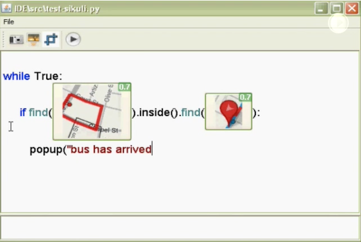
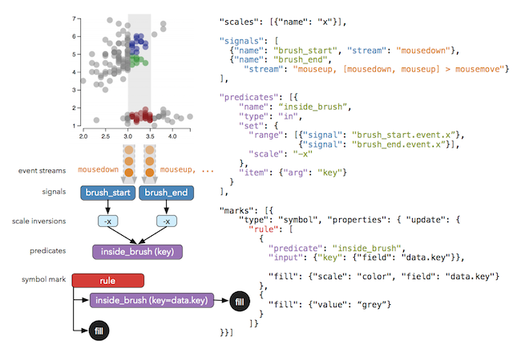
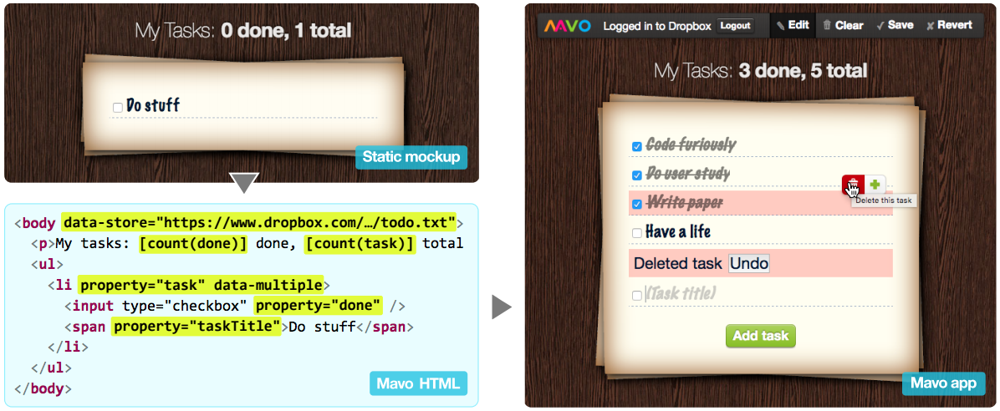
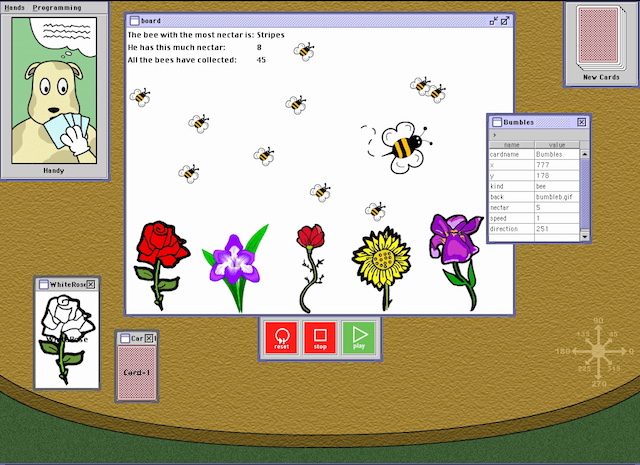

Credit: CC0 Creative Commons
Credit: CC0 Creative Commons
If you don't know the history of computing, it's easy to overlook the fact that all of the interfaces that people used to control computers before the graphical user interface were programming interfaces. The distinction between programming interfaces and interactive interfaces comes down to three critical attributes of programming (Blackwell 2002):
Because of the indirection, notation, and abstraction inherent to programming interfaces, I will refer to them as "declarative" interfaces from here on. In these interfaces, a user declares to the computer what it wants, and then the computer compiles and executes the instructions (rather than acting directly on data).
Why are we talking about programming in a book about user interfaces? Well, programming interfaces are user interfaces. They're just user interfaces that have very different properties than the interactive user interfaces we're all familiar with. Clearly, all of the properties above come with great cost: no immediate feedback, having to learn a programming language, and having to think abstractly are all much more difficult than having to learn a graphical user interface. But with all of that additional learning also comes great power. People can use programming languages to get computers to do entirely new things, to control their behavior more precisely, and more importantly, to automate tasks that humans can't do or can't do nearly as quickly.
What are programming interfaces? Ultimately, they're software that translate some expression of a program (a text file with code in it, or a hierarchical tree of language constructs in block-based editor) into a representation a computer can execute, usually some series of instructions that consist of low level operations such as arithmetic, reading and writing data values in memory, and jumping to other instructions. In textual languages, there are lexers, which decompose code into tokens, which are then parsed according to a formal grammar into an abstract syntax tree. In the case of block-based editors, users use an editor to directly manipulate an abstract syntax tree. Abstract syntax trees are them compiled into instructions, which the program can then later execute. Sometimes the instructions are "interpreted," in that they are executed by another program, and some are directly executed by a physical CPU. This translation process is what makes programming languages so hard to learn: it creates great distance between notational expressions of what a user wants and the eventual behavior of the compiled program and its output.
However, this distance, conceptually, is no different from any other user interface. Because programming interfaces are user interfaces, they also have gulfs of evaluation and execution, and affordances and feedback that bridge them. Their gulfs are just much larger because of translation. Because textual programs are parsed according to a formal grammar, there are numerous ways to violate the grammar, requiring a user to know the rules of the grammar to write correct programs. Because the functional affordances in a programming language can be combined in infinite ways, there are an infinite number of programs that can exist. How can one figure out which program will achieve a user's goal? Code examples, documentation, Stack Overflow, design patterns, software architecture skills, and other media are key to bridging this gulf. Similarly, because programs can execute hundreds, thousands, even billions of instructions per second, and even simple programs can execute in a multitude of different ways depending on the input they receive, there's a really big space of possible program outputs that a user might need to understand. That's a big gulf of evaluation, and programs mostly provide no feedback about how they execute. Testing, debugging, and monitoring tools help bridge this gulf by providing data and explanations about how a program executed in response to input.
While there is a vast literature on programming languages and tools, and much of it focuses on bridging gulfs of execution and evaluation, in this chapter, we'll focus on the contributions that HCI researchers have made to solving these problems, as they demonstrate the rich, under-explored design space of ways that people can program computers beyond using general purpose languages. Much of this work can be described as supporting end-user programming, which is any programming that someone does as a means to accomplishing some other goal (Ko et al. 2011). For example, a teacher writing formulas in a spreadsheet to compute grades, a child using Scratch to create an animation, or a data scientist writing a Python script to wrangle some data—none of these people are writing code for the code itself (as professional software engineers do), they're writing code for the output their program will produce (the teacher wants the grades, the child wants the animation, the data scientist wants the wrangled data).

This vast range of domains in which programming interfaces can be applied has lead to an abundance of unique programming interfaces. For example, several researchers have explored ways to automate interaction with user interfaces, to take repetitive tasks and automate them. One such system is Sikuli (above), which allows users to use screenshots of user interfaces to write scripts that automate interactions (Yeh et al. 2009). Similar systems have used similar ideas to allow users to write simple programs to automate web tasks. CoScripter (Leshed et al. 2008) allowed a user to demonstrate an interaction with an interface, which generated a program in a natural-language-like syntax that could then be executed to replay that action. CoCo (Lau et al. 2010) allowed a user to write a command like "get road conditions for highway 88," which the system then translates into operations on a website using the user's previous browsing history and previously recorded web scripts. Two related contributions used the metaphor of a command line interface for the web and desktop applications, one taking natural language descriptions of task and recommending commands (Miller et al. 2008) and the other using a "sloppy" syntax of keywords to recommend commands within an application (Little and Miller 2006). All of these ideas bridge the gulf of execution, helping a user express their goal in terms they understand such as demonstrating an action, selecting part of an interface, or describing their goal, then having the system translate these into an executable program.

Another major focus has been supporting people interacting with data. Some systems like Vega above have offered new programming languages for declaratively specifying data visualizations (Satyanarayan et al. 2014). Others have provided programmatic means for wrangling and transforming data with interactive support for previewing the effects of candidate transformation programs (Guo et al. 2011, Mayer et al. 2015). One system looked at interactive ways of helping users search and filter data with regular expressions by identifying examples of outlier data (Miller and Myers 2001), whereas other systems have helped translate examples of desired database queries into SQL queries (Abouzied et al. 2012). Again, a major goal of all of these systems is to help bridge the gulf of evaluation between a user's goal and the program necessary to achieve it.

Some systems have attempted to support more ambitious automation, empowering users to create entire applications that better support their personal information needs. For example, many systems have combined spreadsheets with other simple scripting languages to enable users to write simple web applications with rich interfaces, using the spreadsheet as a database (Chang and Myers 2014, Benson et al. 2014). Other systems like Mavo above and Dido have encapsulated the entire application writing process to just editing HTML by treating HTML as a specification for both the layout of a page and the layout of data (Verou et al. 2016, Karger et al. 2009). An increasing number of systems have explored home automation domains, finding clear tradeoffs between simplicity and expressiveness in rule-based programs (Britch 2017).

Perhaps the richest category of end-user programming systems are those supporting the creation of games. Hundreds of systems have provided custom programming languages and development environments for authoring games, ranging from simple game mechanics to entire general purpose programming languages to support games (Kelleher and Pausch 2005). For example, the system above, called Hands, carefully studied how children express computation with natural language, and designed a programming language inspired by the computational ideas inherent in children's reasoning about game behavior (Pane and Myers 2002). Other systems, most notably Gamut (McDaniel and Myers 1997), used a technique called programming by demonstration, in which users demonstrate the behavior they want the computer to perform, and the computer generalizes that into a program that can be executed later on a broader range of situations than the original demonstration. Gamut was notable for its ability to support the construction of an entire application by demonstration, unlike many of the systems discussed above, which only partially used demonstration.
The vast majority of innovations for programming interfaces have focused on bridging the gulf of execution. Fewer systems have focused on bridging gulfs of evaluation by supporting, testing, and debugging behaviors a user is trying to understand. One from my own research was a system called the Whyline (see the video above), which allowed users to ask "why" and "why not" questions when their program did something they didn't expect, bridging a gulf of evaluation. It identified questions by scanning the user's program for all possible program outputs, and answered questions by precisely trying the cause of every operation in the program, reasoning backwards about the chain of causality that caused an unwanted behavior or prevented a desired behavior. More recent systems have provided similar debugging and program comprehension support for understanding web pages (Burg et al. 2015, Hibschman and Zhang 2015), machine learned classifiers (Patel et al. 2010, Kulesza et al. 2009), and even embedded systems that use a combination of hardware and software to define a user interface (Strasnick et al. 2017, McGrath et al. 2017).
One way to think about all of these innovations is as trying to bring all of the benefits of graphical user interfaces—immediate feedback, direct manipulation, and concreteness—to notations that inherently don't have those properties, by augmenting programming environments with these features. This progress is blurring the distinction between declarative interfaces and interactive interfaces, bringing the power of programming to broader and more diverse audiences.
Azza Abouzied, Joseph Hellerstein, and Avi Silberschatz. 2012. DataPlay: interactive tweaking and example-driven correction of graphical database queries. In Proceedings of the 25th annual ACM symposium on User interface software and technology (UIST '12). ACM, New York, NY, USA, 207-218.
Salman Ahmad and Sepandar Kamvar. 2013. The dog programming language. In Proceedings of the 26th annual ACM symposium on User interface software and technology (UIST '13). ACM, New York, NY, USA, 463-472.
Blackwell, A. F. (2002). First steps in programming: A rationale for attention investment models. In Human Centric Computing Languages and Environments, 2002. Proceedings. IEEE 2002 Symposia on (pp. 2-10). IEEE.
Edward Benson, Amy X. Zhang, and David R. Karger. 2014. Spreadsheet driven web applications. In Proceedings of the 27th annual ACM symposium on User interface software and technology (UIST '14). ACM, New York, NY, USA, 97-106.
Julia Brich, Marcel Walch, Michael Rietzler, Michael Weber, and Florian Schaub. 2017. Exploring End User Programming Needs in Home Automation. ACM Trans. Comput.-Hum. Interact. 24, 2, Article 11 (April 2017), 35 pages.
Brian Burg, Andrew J. Ko, and Michael D. Ernst. 2015. Explaining Visual Changes in Web Interfaces. In Proceedings of the 28th Annual ACM Symposium on User Interface Software & Technology (UIST '15). ACM, New York, NY, USA, 259-268.
Kerry Shih-Ping Chang and Brad A. Myers. 2014. Creating interactive web data applications with spreadsheets. In Proceedings of the 27th annual ACM symposium on User interface software and technology (UIST '14). ACM, New York, NY, USA, 87-96.
Richard G. McDaniel and Brad A. Myers. 1997. Gamut: demonstrating whole applications. In Proceedings of the 10th annual ACM symposium on User interface software and technology (UIST '97). ACM, New York, NY, USA, 81-82.
Philip J. Guo, Sean Kandel, Joseph M. Hellerstein, and Jeffrey Heer. 2011. Proactive wrangling: mixed-initiative end-user programming of data transformation scripts. In Proceedings of the 24th annual ACM symposium on User interface software and technology (UIST '11). ACM, New York, NY, USA, 65-74.
Joshua Hibschman and Haoqi Zhang. 2015. Unravel: Rapid Web Application Reverse Engineering via Interaction Recording, Source Tracing, and Library Detection. In Proceedings of the 28th Annual ACM Symposium on User Interface Software & Technology (UIST '15). ACM, New York, NY, USA, 270-279.
David R. Karger, Scott Ostler, and Ryan Lee. 2009. The web page as a WYSIWYG end-user customizable database-backed information management application. In Proceedings of the 22nd annual ACM symposium on User interface software and technology (UIST '09). ACM, New York, NY, USA, 257-260.
Caitlin Kelleher and Randy Pausch. 2005. Lowering the barriers to programming: A taxonomy of programming environments and languages for novice programmers. ACM Comput. Surv. 37, 2 (June 2005), 83-137.
Andrew J. Ko, Robin Abraham, Laura Beckwith, Alan Blackwell, Margaret Burnett, Martin Erwig, Chris Scaffidi, Joseph Lawrance, Henry Lieberman, Brad Myers, Mary Beth Rosson, Gregg Rothermel, Mary Shaw, and Susan Wiedenbeck. 2011. The state of the art in end-user software engineering. ACM Comput. Surv. 43, 3, Article 21 (April 2011), 44 pages.
Todd Kulesza, Weng-Keen Wong, Simone Stumpf, Stephen Perona, Rachel White, Margaret M. Burnett, Ian Oberst, and Andrew J. Ko. 2009. Fixing the program my computer learned: barriers for end users, challenges for the machine. In Proceedings of the 14th international conference on Intelligent user interfaces (IUI '09). ACM, New York, NY, USA, 187-196.
Tessa Lau, Julian Cerruti, Guillermo Manzato, Mateo Bengualid, Jeffrey P. Bigham, and Jeffrey Nichols. 2010. A conversational interface to web automation. In Proceedings of the 23nd annual ACM symposium on User interface software and technology (UIST '10). ACM, New York, NY, USA, 229-238.
Gilly Leshed, Eben M. Haber, Tara Matthews, and Tessa Lau. 2008. CoScripter: automating & sharing how-to knowledge in the enterprise. In Proceedings of the SIGCHI Conference on Human Factors in Computing Systems (CHI '08). ACM, New York, NY, USA, 1719-1728.
Greg Little and Robert C. Miller. 2006. Translating keyword commands into executable code. In Proceedings of the 19th annual ACM symposium on User interface software and technology (UIST '06). ACM, New York, NY, USA, 135-144.
Mikaël Mayer, Gustavo Soares, Maxim Grechkin, Vu Le, Mark Marron, Oleksandr Polozov, Rishabh Singh, Benjamin Zorn, and Sumit Gulwani. 2015. User Interaction Models for Disambiguation in Programming by Example. In Proceedings of the 28th Annual ACM Symposium on User Interface Software & Technology (UIST '15). ACM, New York, NY, USA, 291-301.
Will McGrath, Daniel Drew, Jeremy Warner, Majeed Kazemitabaar, Mitchell Karchemsky, David Mellis, and Björn Hartmann. 2017. Bifröst: Visualizing and checking behavior of embedded systems across hardware and software. In Proceedings of the 30th Annual ACM Symposium on User Interface Software and Technology (UIST '17). ACM, New York, NY, USA, 299-310.
Robert C. Miller, Victoria H. Chou, Michael Bernstein, Greg Little, Max Van Kleek, David Karger, and mc schraefel. 2008. Inky: a sloppy command line for the web with rich visual feedback. In Proceedings of the 21st annual ACM symposium on User interface software and technology (UIST '08). ACM, New York, NY, USA, 131-140.
Robert C. Miller and Brad A. Myers. 2001. Outlier finding: focusing user attention on possible errors. In Proceedings of the 14th annual ACM symposium on User interface software and technology (UIST '01). ACM, New York, NY, USA, 81-90.
J. F. Pane, B. A. Myers and L. B. Miller, Using HCI techniques to design a more usable programming system. Proceedings IEEE 2002 Symposia on Human Centric Computing Languages and Environments, 2002, pp. 198-206.
Kayur Patel, Naomi Bancroft, Steven M. Drucker, James Fogarty, Andrew J. Ko, and James Landay. 2010. Gestalt: integrated support for implementation and analysis in machine learning. In Proceedings of the 23nd annual ACM symposium on User interface software and technology (UIST '10). ACM, New York, NY, USA, 37-46.
Arvind Satyanarayan, Kanit Wongsuphasawat, and Jeffrey Heer. 2014. Declarative interaction design for data visualization. In Proceedings of the 27th annual ACM symposium on User interface software and technology (UIST '14). ACM, New York, NY, USA, 669-678.
Evan Strasnick, Maneesh Agrawala, and Sean Follmer. 2017. Scanalog: Interactive design and debugging of analog circuits with programmable hardware. In Proceedings of the 30th Annual ACM Symposium on User Interface Software and Technology (UIST '17). ACM, New York, NY, USA, 321-330.
Lea Verou, Amy X. Zhang, and David R. Karger. 2016. Mavo: Creating Interactive Data-Driven Web Applications by Authoring HTML. In Proceedings of the 29th Annual Symposium on User Interface Software and Technology (UIST '16). ACM, New York, NY, USA, 483-496.
Tom Yeh, Tsung-Hsiang Chang, and Robert C. Miller. 2009. Sikuli: using GUI screenshots for search and automation. In Proceedings of the 22nd annual ACM symposium on User interface software and technology (UIST '09). ACM, New York, NY, USA, 183-192.